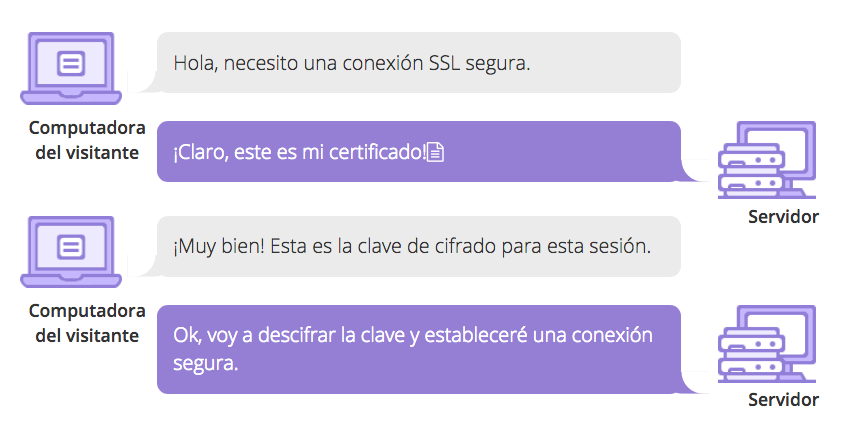
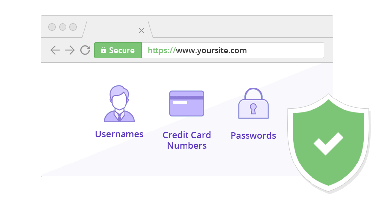
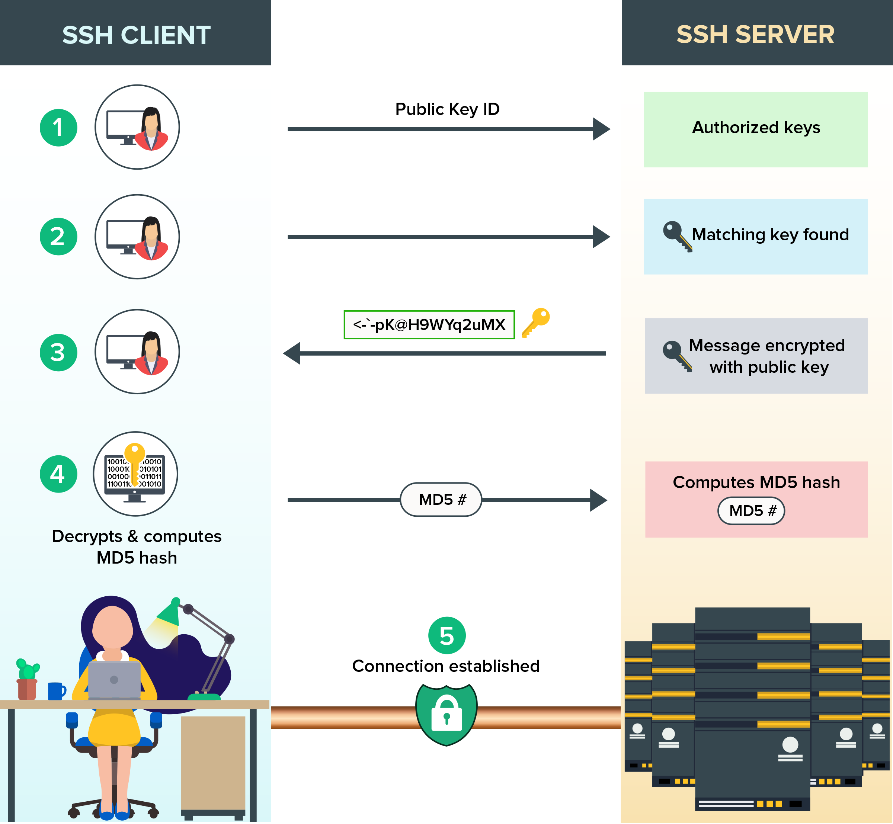
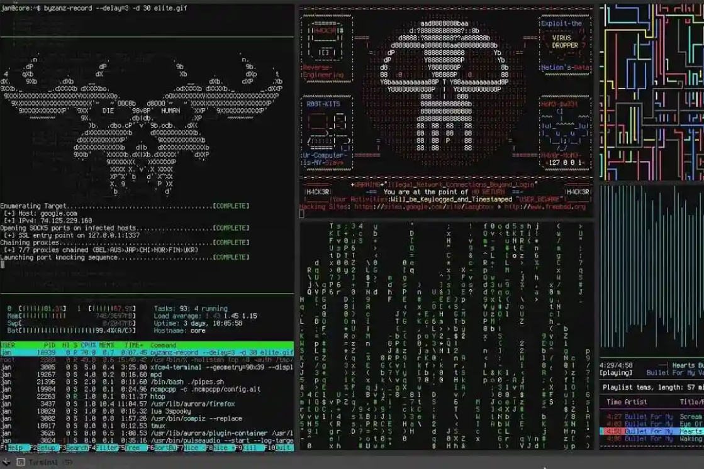

SSL (acrónimo de Secure Sockets Layer) es un tipo de seguridad digital que permite la comunicación cifrada entre un sitio web y un navegador web, haciendo que sea seguro transmitir información confidencial, como datos personales, de pagos o de inicio de sesión. Tener un certificado SSL hace que sea más difícil para los delincuentes y hackers rastrear la conexión y robar los datos.
Ahora que sabes qué es un certificado SSL, veamos cómo funciona.
Los certificados SSL/TLS vinculan digitalmente una clave criptográfica a la información de identificación de una empresa. Esto les permite cifrar las transferencias de datos de tal manera que no puedan ser descifrados por terceros.
El protocolo TLS funciona al tener tanto una clave privada como una pública, así como claves de sesión para cada sesión segura única. Cuando un visitante escribe una dirección con seguridad HTTPS en su navegador web o navega a través de una página segura, el navegador y el servidor web se conectan.
Durante la conexión inicial, las claves pública y privada se utilizarán para crear una clave de sesión, que luego se utilizará para cifrar y descifrar los datos que se transfieren. Esta clave de sesión seguirá siendo válida por un tiempo limitado y solo se utilizará para esa sesión en particular.
Puedes saber si un sitio web está usando un certificado al mirar si tiene un ícono de candado o una barra verde en la parte superior de tu navegador. Deberías poder hacer clic en este ícono para ver la información sobre quién posee el certificado y para administrar tu configuración SSL.
SSL es necesario cuando se transfiere información confidencial como nombres de usuario y contraseñas o información de procesamiento de pagos.
El objetivo de SSL/TLS es asegurarse de que solo una persona (la persona u organización designada por el usuario) pueda acceder a los datos que se transfieren. Esto es particularmente importante cuando piensas entre cuántos dispositivos y servidores se transfiere la información antes de que llegue a su destino.
Existen tres usos principales que hacen que un certificado SSL/TLS sea imprescindible en tu sitio web:
Recuerda que SSL se puede usar en casi cualquier dispositivo, lo que también lo convierte en una opción de seguridad versátil en la era actual de múltiples dispositivos. Las ventajas de usar certificados SSL valen más que el tiempo y la inversión monetaria requerida para configurarlos, así que no tienes nada que perder.
SSH, también conocido como Secure Shell o Secure Socket Shell, es un protocolo de red que ofrece a los usuarios, especialmente a los administradores de sistemas, una forma segura de acceder a un ordenador a través de una red no segura.
SSH también se refiere al conjunto de utilidades que implementan el protocolo SSH. Secure Shell proporciona una autenticación de contraseña fuerte y una autenticación de clave pública, así como comunicaciones de datos encriptadas entre dos ordenadores que se conectan a través de una red abierta, como Internet.
Además de proporcionar un fuerte cifrado, SSH es ampliamente utilizado por los administradores de red para gestionar sistemas y aplicaciones de forma remota, permitiéndoles iniciar sesión en otro ordenador a través de una red, ejecutar comandos y mover archivos de un ordenador a otro.
SSH se refiere tanto al protocolo de red criptográfico como al conjunto de utilidades que implementan dicho protocolo. SSH utiliza el modelo cliente-servidor, conectando una aplicación cliente de Secure Shell, que es el extremo donde se visualiza la sesión, con un servidor SSH, que es el extremo donde se ejecuta la sesión. Las implementaciones de SSH suelen incluir soporte para los protocolos de aplicación utilizados para la emulación de terminales o la transferencia de archivos.
SSH también puede utilizarse para crear túneles seguros para otros protocolos de aplicación, por ejemplo, para ejecutar de forma segura sesiones gráficas del sistema X Window de forma remota. Un servidor SSH, por defecto, escucha en el puerto 22 del Protocolo de Control de Transmisión (TCP) estándar.
Secure Shell se creó para sustituir a los programas inseguros de emulación de terminal o de inicio de sesión, como Telnet, rlogin (inicio de sesión remoto) y rsh (shell remoto). SSH permite las mismas funciones: iniciar y ejecutar sesiones de terminal en sistemas remotos. SSH también sustituye a los programas de transferencia de archivos, como File Transfer Protocol (FTP) y rcp (remote copy).
El uso más básico de SSH es conectarse a un host remoto para una sesión de terminal. La forma de ese comando es la siguiente:
ssh UserName@SSHserver.example.com
Este comando hará que el cliente intente conectarse al servidor llamado server.example.com, utilizando el ID de usuario UserName. Si es la primera vez que se negocia una conexión entre el host local y el servidor, se le pedirá al usuario la huella digital de la clave pública del host remoto y se le pedirá que se conecte, a pesar de que no haya habido ninguna conexión previa:
The authenticity of host 'sample.ssh.com' cannot be established.
DSA key fingerprint is 01:23:45:67:89:ab:cd:ef:ff:fe:dc:ba:98:76:54:32:10.
Are you sure you want to continue connecting (yes/no)?
Responder afirmativamente a la pregunta hará que la sesión continúe, y la clave del host se almacena en el archivo known_hosts del sistema local. Este es un archivo oculto, almacenado por defecto en un directorio oculto, llamado /.ssh/known_hosts, en el directorio principal del usuario. Una vez que la clave de host ha sido almacenada en el archivo known_hosts, el sistema cliente puede conectarse directamente a ese servidor de nuevo sin necesidad de ninguna aprobación; la clave de host autentifica la conexión.
El protocolo de transferencia de hipertexto seguro (HTTPS) es la versión segura de HTTP, que es el principal protocolo utilizado para enviar datos entre un navegador web y un sitio web. HTTPS está encriptado para aumentar la seguridad de la transferencia de datos. Esto es especialmente importante cuando los usuarios transmiten datos sensibles, como al iniciar sesión en una cuenta bancaria, un servicio de correo electrónico o un proveedor de seguros médicos.
Cualquier sitio web, especialmente los que requieren credenciales de inicio de sesión, debe utilizar HTTPS. En los navegadores modernos, como Chrome, los sitios web que no utilizan HTTPS están marcados de forma diferente a los que sí lo hacen. Busque un candado verde en la barra de URL para indicar que la página web es segura. Los navegadores web se toman en serio el HTTPS; Google Chrome y otros navegadores marcan todos los sitios web que no utilizan HTTPS como no seguros.
HTTPS utiliza un protocolo de encriptación para cifrar las comunicaciones. El protocolo se llama Transport Layer Security (TLS), aunque antes se conocía como Secure Sockets Layer (SSL). Este protocolo asegura las comunicaciones utilizando lo que se conoce como una infraestructura de clave pública asimétrica. Este tipo de sistema de seguridad utiliza dos claves diferentes para cifrar las comunicaciones entre dos partes:
En este tutorial, presentaré algunas de las mejores prácticas para construir tu propio servidor seguro. Enumeraré los pasos que deberás seguir para tener un servidor completamente funcional que puedas utilizar en producción para tu aplicación.
Para más información consulte https://www.freecodecamp.org/news/how-to-create-your-first-safe-server-ready-for-production-f1cc60eec69a/
Tener un servidor seguro no se limita a seguir algunos pasos. Es una búsqueda constante de nuevos recursos y una mejora interminable. Pero este artículo puede ser un paso 0 en la construcción de su propia infraestructura.
Voy a utilizar Amazon EC2 para ejecutar estas pruebas, pero también he utilizado Amazon LightSail, Digital Ocean, Vultr y algunos otros. En todos los casos, fueron lo mismo para configurar, así que puedes usar el proveedor que prefieras.
Antes de empezar, vamos a crear un par de claves que algunos hosts piden durante la instalación del servidor. Este paso y el siguiente pueden omitirse si decides crear un par de claves mientras lanzas una instancia de máquina con Amazon.
Cree un par de claves SSH con la herramienta ssh-keygen.
$ ssh-keygen -t rsa -b 4096
Después de este paso, tendrás los siguientes archivos: id_rsa e id_rsa.pub (claves privadas y públicas). Nunca compartas tu clave privada.
Puede encontrar un documento más detallado sobre la creación de las claves aquí.
Importaremos la clave pública que acabamos de crear en la plataforma de Amazon.
id_rsa.pub)Voy a instalar una versión de Ubuntu en Amazon EC2. Puedes encontrar una configuración completa en este enlace. Los pasos son los siguientes (pero sólo para simplificar, siga este enlace para más explicación):
Ubuntu Server 16.04 LTS (HVM), tipo de volumen SSD (pero elija según sus necesidades).Atención: Algunos de los pasos de abajo podrían ser configurados en esta pantalla inicial de Amazon. Pero como quiero crear un tutorial genérico que pueda ser utilizado para otros hosts, elegí las configuraciones por defecto.
Accede a la máquina con ssh.
Escriba en su terminal:
$ ssh <USER>@<IP-ADDRESS> -p 22 -i <PATH-TO-PRIVATE-KEY>
Crear una nueva cuenta de usuario llamada "wizard"
$ sudo adduser wizard
Dale a "wizard" el permiso de sudo. Abra el archivo
$ sudo nano /etc/sudoers.d/wizard
Y establezca el contenido:
wizard ALL=(ALL) NOPASSWD:ALL
Cree los siguientes directorios:
$ mkdir /home/wizard/.ssh# create authorized_keys file and copy your public key here$ nano /home/wizard/.ssh/authorized_keys$ chown wizard /home/wizard/.ssh$ chown wizard /home/wizard/.ssh/authorized_keys
Copie el contenido de la clave pública (PATH-TO-PUBLIC-KEY) y péguelo en la instancia remota en el archivo /home/wizard/.ssh/authorized_keys . Establezca los permisos:
$ chmod 700 /home/wizard/.ssh$ chmod 600 /home/wizard/.ssh/authorized_keys
Ingeniero en Sistemas Computacionales, apasionado por la tecnología. Deasrrollador Web Full-Stack por ocupación e inquisidor por convicción.
 Django: tutorial para principiantes
Django: tutorial para principiantes
 Hacking ético con Kali Linux
Hacking ético con Kali Linux
Desarrollo Web Front-end Back-end SSH SSL HTTP HTTPS AWS Azure GCP Load-balancing Jboss EAP Java EE Spring Boot

Ingrese su e-mail y reciba las últimas noticias.